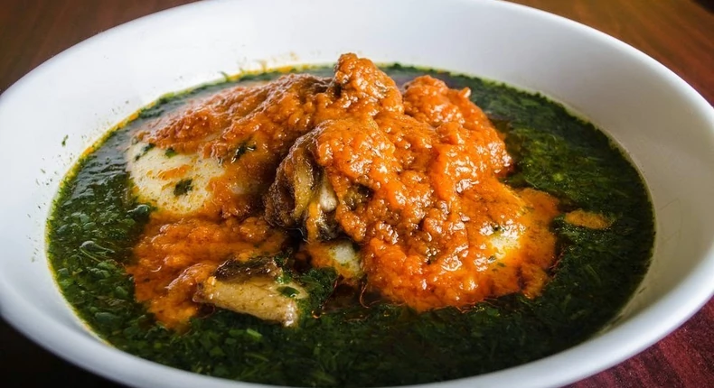

How to Prepare T.Z

about the recipe
Tuo Zaafi as it is called is a recipe that originates from West Africa,
it is one of the
popular dishes in West African countries such as Ghana and Nigeria
ingredients
- Ayoyo leaves
- Salt Peter (Potassium nitrate)
- Powdered Fish
- Powdered Okro
- Dawadawa
- Pepper
- Onions
- Fish seasoning
- All purpose spices
- Meat (Beef)
- Palm oil
- Tomatoes
- Salmon
- Herrings
- Cassava flour
- Corn flour
steps
- Chop the ayoyo leaves into smaller sizes
- Boil water, add chopped onion, powdered fish, powdered okro and dawadawa.
- After 5 minutes add ayoyo leaves and salt peter
- Don't cover, stir continuously until ingredients become very soft.
- Add salt and seasoning. Allow to simmer for 3 minutes and soup is ready.
- Cut meat into desirable sizes. Wash and put meat in big saucepan over moderate heat.
- Blend onion, ginger, garlic and add to meat.
- Add salt and seasoning and cover meat to steam for 5-10 minutes.
- Heat pan over medium high heat until hot and then add the olive oil. then add the chicken.
- Fry on one side until browned and then flip.
- Brown the second side and then transfer the meat to a bowl.
- Add chopped onion and garlic and saute until tender and starting to brown.
- Add grinded pepper, tomato puree and stir intermintently.
- Wash salmon and herrings. Then add to stew.
- After 6-10 minutes, add spices and allow to cook.
- Taste for salt and add some chopped onions.
- Finally add fried meat and allow to simmer for 3 minutes.
- Fetch some corn flour and add cold water. Then mix thoroughly to form a solution.
- Boil enough water and add corn flour to cook for 5-10 minutes.
- Fetch some of the solution into a separate bowl.
- Mix dry corn dough and cassava dough and Add mixture bit by bit to the boiling corn dough and stir thoroughly to prevent any lumps.
- Add the corn dough solution you fetched aside to the Tuo Zaafi to make it soft and stir.
- After 15-20 minutes of stirring the Tuo Zaafi, you turn of the heat.
- Serve Tuo Zaafi with stew and soup.